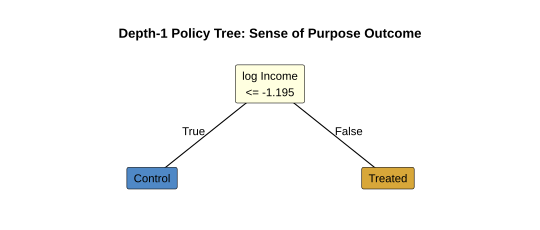

Week 9: Resource Allocation and Policy Trees
Date: 6 May 2026
Readings
Required
Optional
Key concepts
- Policy learning turns CATE scores into treatment rules.
- Policy value must be evaluated out of sample.
- Shallow policy trees trade a little value for a lot of interpretability.
- Fairness constraints are design choices, not automatic outputs.
Week 8 estimated individual-level treatment contrasts and assessed whether targeting has practical value. Rankings alone are not policy. This week translates those rankings into interpretable, publicly defensible allocation rules, and asks how much of the underlying heterogeneity a short rule can recover.
Seminar
Motivating example
A district health board can fund an intervention to enhance sense of purpose for only twenty percent of eligible residents. A causal forest suggests large heterogeneity. The top-ranked group appears to benefit most. The board now needs a rule that can be defended in public, not just a ranking inside a script. The rule must be short enough to fit on a single page, robust enough to survive scrutiny by people who did not fit the model, and accompanied by an honest account of what the data can and cannot decide.
We work through purpose for concreteness; lab 9 repeats the same workflow across four outcomes (purpose, belonging, self-esteem, life satisfaction).
![Outcome-wide average treatment effect (ATE) forest plot for community-group participation across four outcomes (purpose, belonging, self-esteem, life satisfaction). Each row shows the estimated average treatment effect on the risk-difference scale with a 95% confidence interval, accompanied by an E-value bound that quantifies how strong an unmeasured confounder would need to be on the relative-risk scale to explain the result away. The lab's day-to-day workflow estimates effects across many outcomes at once, then asks the policy question only for those whose effects survive sensitivity analysis.](figures/lab-09/ate-forest-multi-outcome.svg)
From ranking to policy
Week 8 produced a ranked list: who is predicted to benefit most. A ranking is informative, but it is not a rule. A rule maps any covariate profile $x$ to an action $d(x) \in {0, 1}$, "treat" or "do not treat". Two profiles that are nearly identical should receive nearly identical decisions, and a ranking gives no such guarantee, because rank position drifts with sample size.
We need a way to score competing rules: how much benefit each would deliver, on average, if applied to the whole population. Call that number the rule's policy value, written $V(d)$:
$$ V(d) = \mathbb{E}[Y(d(X))]. $$
A budget cap restricts the share of the population the rule may treat:
$$ \mathbb{E}[d(X)] \le q. $$
Policy learning seeks the rule with the highest $V(d)$ subject to the cap. Two practical complications follow. First, $V(d)$ is a counterfactual quantity, since for any individual we observe at most one of $Y(0)$ or $Y(1)$. We need to evaluate candidate rules without assigning everyone to them. Second, the rule must be small enough to defend in front of a non-statistical audience. Both constraints push the analysis toward shallow, transparent decision trees evaluated with doubly-robust scores.
Why policy trees
A causal forest maps a high-dimensional covariate vector $X$ to a
personalised score $\hat{\tau}(X)$. The function itself is too tangled
(thousands of overlapping splits across hundreds of trees) to hand to a
decision-maker. The policytree algorithm bridges that gap. It
collapses the forest's many $\hat{\tau}(X)$ values into a single
shallow decision tree, where each split is chosen to maximise expected
policy value subject to the depth budget (Sverdrup et al.,
2024).
The algorithm proceeds greedily, top down. At the root, it searches every covariate and every threshold for the split that delivers the largest gain in policy value when each child receives the locally-optimal action. It then recurses into each child until the depth limit is reached. Because the rule must hold for the entire population, the search uses doubly-robust scores rather than raw outcomes. The doubly-robust idea is plain: blend an outcome-model prediction with a propensity-weighted residual, so the resulting score stays unbiased as long as either model is right. The corresponding score for individual $i$ under treatment $a$ is the augmented inverse-propensity-weighted (AIPW) score:
$$ \Gamma_i(a) = \mu_a(X_i) + \frac{\mathbb{1}{W_i = a}}{\Pr(W = a \mid X_i)},\bigl(Y_i - \mu_a(X_i)\bigr), $$
where $\mu_a(x)$ is the outcome model and $\Pr(W = a \mid x)$ is the propensity. The first term is the model's best guess at $Y_i(a)$; the second corrects that guess on the observed cases using inverse-propensity reweighting. A rule built on AIPW scores is therefore robust to one form of misspecification: as long as one of the two models is correct, the scores stay unbiased estimates of $Y_i(a)$.
In this course we cap tree depth at two. Three reasons motivate the cap. First, at most three yes/no questions per rule means the logic fits on a slide for policy-makers or clinicians. Second, each leaf retains enough observations to yield a stable effect estimate, and stability matters more than precision when the audience is non-technical. Third, deeper trees increase computational complexity faster than they improve payoffs; the gain from a depth-3 tree over a depth-2 tree is usually small relative to the loss in clarity.
Pair exercise: designing a depth-2 policy rule
A community programme can offer places to 20% of eligible residents. Suppose a simple rule can split on deprivation index (high/low), baseline loneliness (high/low), and age (under 40/40 or older).
- Sketch a depth-2 tree that treats about 20% of residents. Label each leaf "treat" or "do not treat."
- Write your rule as one sentence a community organiser could repeat.
- Explain how your tree stays within the 20% budget. Use simple assumptions such as "40% are high-deprivation and half of those are high-loneliness."
- Give two reasons this rule is easier to defend than a depth-4 tree.
Reading a policy tree
Two visualisations work in tandem. The decision-tree diagram shows the rule abstractly: which covariate, which threshold, which leaf. The prediction-points scatter shows the rule as a partition of the underlying covariate space, with each individual coloured by the assigned action.
![Depth-2 policy tree for purpose under community-group participation. Each non-leaf node names the covariate and threshold that maximises expected policy value at that branch; each leaf says "treat" or "control". Read top to bottom: the first split is on openness at $-0.395$. People at or below that level enter the left subtree, where openness is split again at $-0.431$. People above the first threshold enter the right subtree, where neuroticism is split at $1.831$. A three-question rule like this is what makes a policy tree defensible: a clinician, teacher, or community organiser can repeat the logic verbatim.](figures/lab-09/policy-tree-purpose-depth2.svg)
![Prediction-points scatter for the same depth-2 rule. The two panels correspond to the left and right subtrees of the policy tree above. Each point is one person, located at their values on the splitting covariates and coloured by the assigned action (control = blue circle, treat = orange triangle). Dashed lines mark the split thresholds; grey rectangles mark the regions in which everyone is recommended for treatment. The tree describes the rule abstractly; the scatter shows the rule as a partition of the underlying continuous heterogeneity surface. Points hugging a threshold are the most fragile cases, where small changes in covariates flip the recommendation; points deep inside a "treat" or "control" region are robustly classified.](figures/lab-09/policy-tree-scatter-purpose-depth2.svg)
Read the two together. Where the scatter has many control-coloured points clustered against a treat boundary, the rule is treating individuals whose own predicted benefit is small but whose neighbourhood benefit is large. That is the cost of forcing a sharp threshold onto a smooth surface, and it is one reason a policy tree should never be the only output of an analysis. The underlying CATE estimates and the omnibus heterogeneity test from week 8 carry information the tree discards.
Choosing tree depth
The depth budget is a design choice, not a property of the data. A depth-1 rule asks one question; a depth-2 rule asks two or three. Whether the extra depth pays off depends on whether the second-level splits carve out subregions in which the locally optimal action differs from the parent's recommendation.
Compare the two depths for community-group participation on purpose.

On the same held-out sample, the depth-1 policy delivers an estimated policy value of $0.215$ (the rule's expected outcome on the held-out fold, in the outcome's own units); the depth-2 policy delivers $0.243$, a lift of $0.028$ (about thirteen percent above depth-1). The lift is real but small relative to the additional complexity.
A useful rule of thumb: prefer the shallower tree unless the lift is both statistically significant and practically meaningful. "Practically meaningful" depends on context. For a high-stakes clinical intervention, a thirteen-percent lift may justify the extra complexity. For a community programme that must be administered by volunteers, the simpler depth-1 rule may be preferable even at a real cost in policy value, because the rule is more likely to be applied correctly in the field. A rule a worker mis-remembers is not the rule that was evaluated.
The lab's workflow returns both depths automatically, with a default switch threshold of $0.5%$ relative gain. That threshold is conservative: a small statistical lift will tip the recommendation toward depth-2. Investigators should examine both trees, then justify the chosen depth in the methods section.
Pair exercise: depth-1 versus depth-2
- Look at the depth-1 and depth-2 policy trees above. State each rule in one sentence of plain language.
- The depth-2 rule lifts policy value by $0.028$ over the depth-1 rule. For $10,000$ eligible people, describe what a small average lift can mean at population scale.
- Name one reason to deploy the depth-1 rule despite the lift.
- Name one reason to deploy the depth-2 rule.
- State what extra evidence would make you more comfortable choosing the depth-2 rule.
Off-policy evaluation
A policy fitted to a sample will always look good on that sample. The serious test is held-out evaluation. The lab's workflow uses AIPW scores computed on a held-out fold, then estimates policy value and its sampling distribution by averaging over individuals' scores under the proposed rule. The estimator is doubly robust in the sense above; the standard errors come from a plug-in or bootstrap calculation that respects the sampling design.
Two consequences follow. First, the same rule can have different value
estimates depending on which fold is used; small samples make this drift
visible. The lab's stability analysis (margot_policy_tree_stability())
repeats the fit across many train-test splits to surface this
variability. Rules that change splits across resamples are flagged as
unstable, even if any single fit looks reasonable. Second, the policy
value's confidence interval reflects only sampling noise. Model
misspecification, residual confounding, and measurement error sit
outside the interval. Sensitivity analysis on the underlying causal
estimates (E-values, week 8) and equity audits on the rule itself
(below) carry the rest of the inferential burden.
If the held-out value is statistically reliably above the no-treatment
baseline, the rule is worth considering for deployment. If the held-out
value is indistinguishable from random allocation, the rule is not. The
policy_value_audit that margot_policy_workflow() returns flags
both cases automatically.
Practical interpretation
A policy tree's splits are selected to maximise policy value, not to identify causally privileged variables. If a depth-2 tree splits on openness and neuroticism, that does not mean these variables are deep causes of purpose; it means they help separate high-value and low-value treatment regions under the chosen objective and within the budget cap. The same data with a different outcome could pick out an entirely different splitter.
Conversely, a variable that does not appear in the tree is not
necessarily causally irrelevant. The greedy search may have found a
single composite that explains most of the heterogeneity, leaving
secondary variables unused. Variable-importance summaries from the
underlying causal forest (e.g. grf::variable_importance()) give a
complementary picture of what the forest used to estimate
$\hat{\tau}(x)$, even if those variables do not appear at the top of
any policy tree.
When you write up a policy-tree analysis, name the splitters, state the policy value with its confidence interval, and explicitly disclaim the causal interpretation of the splits. Readers who skim past those clarifications will otherwise treat the splitters as causes.
Heterogeneity as scientific discovery
Conditional average treatment effect (CATE) machinery does more than power allocation decisions. It helps science move past a one-size-fits-all mindset. Mapping treatment effects across a high-dimensional covariate space tests whether our conventional categories (gender, age group, clinical severity) capture the differences that matter. Sometimes they do; often they do not. Discovering where the forest finds meaningful splits can generate fresh hypotheses about who responds and why, even when no policy decision is on the table. A forest that splits on loneliness rather than age, for example, suggests the psychological mechanism operates through social connection, not biological ageing. This use of heterogeneity is exploratory, not confirmatory, and a follow-up study designed around the discovered subgroup is the proper test.
Equity and governance
Efficiency is not enough. A rule that maximises policy value can still be unjust, opaque, or politically untenable. Three structural concerns recur.
Proxy variables can encode historical inequity. A split on deprivation may indirectly stratify by ethnicity or structural disadvantage, even when neither variable appears explicitly in the tree. Removing the explicit variable does not remove the bias if its proxy remains.
Targeting concentrates resources on those who benefit most, by design. People who would benefit somewhat from the intervention receive nothing under a tight budget. That trade-off may be defensible, but it is a moral choice the analyst is making on behalf of the affected community, and it should be acknowledged in the writeup rather than concealed inside an objective function.
In Aotearoa New Zealand, allocation rules in health and social-service settings sit inside contested legal, ethical, and political commitments, including Te Tiriti o Waitangi. Reasonable people can disagree about what those commitments require in a particular case. A statistical optimum still needs a public justification: how it treats need, equal citizenship, equity, partnership, local accountability, transparency, and practical feasibility.
Before deployment, investigators should check:
- Who gains and who loses?
- Are protected groups differentially affected through proxies?
- Does the rule reduce or worsen disparities?
- Can affected communities understand and contest the rule?
Pair exercise: equity audit
A policy tree treats residents who are high-deprivation and under 40.
- Translate the rule into plain language.
- Explain how the deprivation split can indirectly stratify by ethnicity in Aotearoa New Zealand.
- Name the table you would compute to check this empirically.
- Apply two governance checks from the list above.
- Propose one governance response that could be defended under a stated interpretation of Te Tiriti o Waitangi and public accountability.
- Your partner says "the algorithm is objective because it only uses data." Counter this claim in two sentences.
Workflow for this week
- Estimate heterogeneity and targeting value (week 8 outputs).
- Fit shallow policy trees at multiple depths under explicit budget constraints.
- Evaluate each policy out of sample with AIPW scores; report policy value with a confidence interval.
- Examine stability across train-test splits and reject unstable rules even when any single fit looks reasonable.
- Conduct an equity audit before recommending deployment.
- Report trade-offs: value, fairness, transparency, and feasibility.
Assessment checkpoint
We will reserve about 25 minutes today for the assessments.
- Test 2, 5 minutes. The test covers weeks 8-10: heterogeneous treatment effects, policy trees, and measurement. Bring one A4 sheet of notes. No devices.
- Test preparation, 10 minutes. The public study sheet and self-study prompts are linked from the resources section of the course book. Use them to practise short answers, not just definitions.
- Research report and Marsden option, 10 minutes. Option A should
follow the current research-report
template: choose
religious_serviceorvolunteer_work, then report effects on all four wellbeing outcomes. Historical examples can help you see tone and structure, but this year's report is narrower and uses simulated data. For Option B, the old Marsden example is a model of compact grant style only; follow the current criteria in Assessments.
Return to the opening example
Back to the district health board. The right question is not "what rule maximises sample gain?" The right question is "what rule performs robustly out of sample, under realistic budget constraints, and remains acceptable under equity and governance standards?" Those four conditions are what move a tree from a slide in a methods talk to a deployable rule in a clinic.
The workflow from question to policy rule is now in place. One assumption has been present throughout but never examined: that our instruments measure the same construct across the groups we compare. Week 10 asks whether that assumption holds.
Pair exercise: policy tree versus ranking
- Strategy A ranks individuals by $\hat{\tau}(X_i)$ and treats the top 20%. Strategy B fits a depth-2 policy tree with a 20% budget constraint.
- Compare the two strategies on: (a) estimated policy value, (b) explainability to a non-technical audience, and (c) ability to answer "why was I selected?"
- State one scenario where Strategy A (pure ranking) is preferable.
- State one scenario where Strategy B (policy tree) is preferable.
- State one equity question both strategies must answer before deployment.
Lab materials: Lab 9: Policy Trees
Bulbulia, J. A. (2024). A practical guide to causal inference in three-wave panel studies. PsyArXiv Preprints. https://doi.org/10.31234/osf.io/uyg3d
Hoffman, K. L., Salazar-Barreto, D., Rudolph, K. E., & Díaz, I. (2023). Introducing longitudinal modified treatment policies: A unified framework for studying complex exposures. https://doi.org/10.48550/arXiv.2304.09460
Suzuki, E., Shinozaki, T., & Yamamoto, E. (2020). Causal Diagrams: Pitfalls and Tips. Journal of Epidemiology, 30(4), 153–162. https://doi.org/10.2188/jea.JE20190192
Sverdrup, E., Kanodia, A., Zhou, Z., Athey, S., & Wager, S. (2024). Policytree: Policy learning via doubly robust empirical welfare maximization over trees. https://CRAN.R-project.org/package=policytree
VanderWeele, T. J., Mathur, M. B., & Chen, Y. (2020). Outcome-wide longitudinal designs for causal inference: A new template for empirical studies. Statistical Science, 35(3), 437–466.